LEGO® Education SPIKE™ Prime es la reciente incorporación al continuo de aprendizaje STEAM. Desde proyectos
de fácil inicio hasta la posibilidad de realizar diseños creativos ilimitados, LEGO SPIKE involucra al
alumnado, independientemente de su nivel de aprendizaje, en el pensamiento crítico, el análisis de datos y
la resolución de problemas complejos con relevancia para el mundo real.
Esta solución está diseñada para el alumnado a partir de los 10 años para realizar lecciones de mínimo 90
minutos.
El alumnado aprende los conceptos esenciales STEAM y las habilidades y competencias del siglo XXI para
convertirse en los pensadores innovadores del mañana mientras se divierten.
Pero más allá de estas ventajas, la utilización de esta herramienta fomenta varios objetivos fundamentales
que son:
- Se desarrolla la creatividad tanto en el juego individual como en el colectivo.
- Es una herramienta que ayuda en metodologías activas y lúdicas, en geometría o matemáticas ayudando
así a comprender mejor la asignatura de matemáticas.
- Capacidad para resolver problemas: hay que buscar una solución sí o sí. Lo que nos da la posibilidad
de poder aplicarlo en las asignaturas científico-técnicas.
- Ayuda a desarrollar el pensamiento lógico: cuando los niños se enfrentan a ciertas piezas necesitan
estructurar y organizar sus ideas, por tanto, utilizan la lógica.
- La comunicación se mejora fomentando el desarrollo del lenguaje y la creatividad.
- Ayuda a desenvolver la psicomotricidad a través de la construcción, logrando así una mayor habilidad
con el paso del tiempo para resolver problemas y desarrollando al máximo las habilidades lógicas.
- Se desarrollan las TIC, iniciando a los más jóvenes a utilizar la robótica como diversión y
herramienta para aprender y solucionar problemas.
Consideramos que ya en esta fase y con los juegos robotizados, los niños son capaces de adquirir habilidades
básicas de programación, colaboración y presentación. Los jóvenes, gracias a estos juegos didácticos
desarrollan un pensamiento más crítico.
LEGO® Education SPIKE™ Prime es considerado como una línea de robótica educativa de amplio espectro para jóvenes, que proporcionará acceso a retos, máquinas complejas, competiciones y entornos completos de programación y mecánica.
LEGO® Education SPIKE™ Prime contiene 7 componentes electrónicos:
- El hub.
- 3 motores.
- 3 sensores.
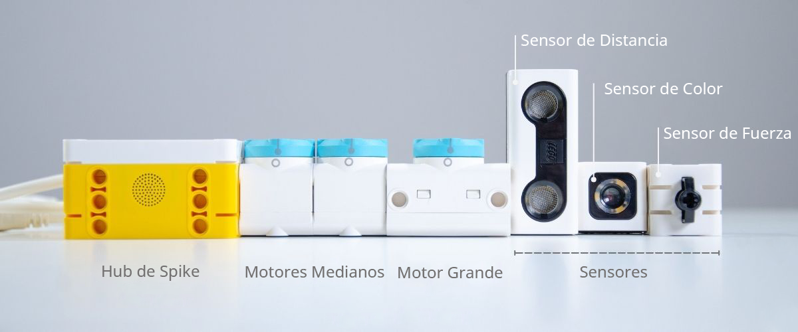
El Hub programable multipuerto, considerado como el corazón de las ideas creativas. Es el elemento central
del set, muy avanzado pero fácil de usar.
Es una unidad de control programable a la que se pueden conectar sensores y motores LEGO® SPIKE.
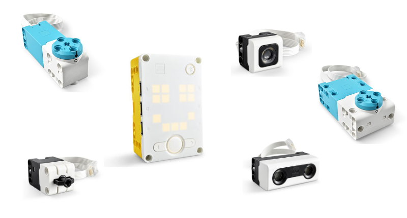
El Hub tiene una interfaz intuitiva de luces y botones y puede funcionar de forma autónoma o en modo de
transmisión.
Características:
- Geometría de construcción Technic que permite una construcción versátil y una fácil integración en
los modelos LEGO Power Functions 2.0 (LPF2) para conexión a sensores y motores LEGO.
- Pantalla blanca de matriz de LED de 5x5
• 25 LED blancos
• Cada LED es programable
• Cada LED se puede atenuar en incrementos de 10 pasos
- 6 puertos de entrada/salida tipo LPF2 (A, B, C, D, E y F)
• Velocidad de puerto de 115 kB
• Los puertos E y F están preparados para “alta velocidad”
• Autodetección de sensores y motores
• Los puertos se pueden elegir libremente al emparejar motores
- Sensor giroscópico de seis ejes incorporado
• Acelerómetro de tres ejes
• Giroscopio de tres ejes
- Navegación de tres botones, incluida la interfaz de luz
• Botón central:
* Enciende/apaga el Hub
* Ejecuta programas seleccionados
* LED de luz RGB dentro del botón que comunican el estado del sistema y son programables
• Botón Izquierda/Derecha:
* Navega por los programas en el Hub
- Altavoz incorporado
• Utilizado para sonidos de interfaz
• La máxima calidad de sonido es de 12 bits 16 KHz (mono)
- Batería recargable
- Conexión por micro-USB o con tecnología Bluetooth
- Altavoz incorporado
- Procesador 100MHz con 320Kbyte de RAM
- Memoria de almacenamiento de 32Mb para guardar hasta 20 programas
- Sistema operativo MicroPython
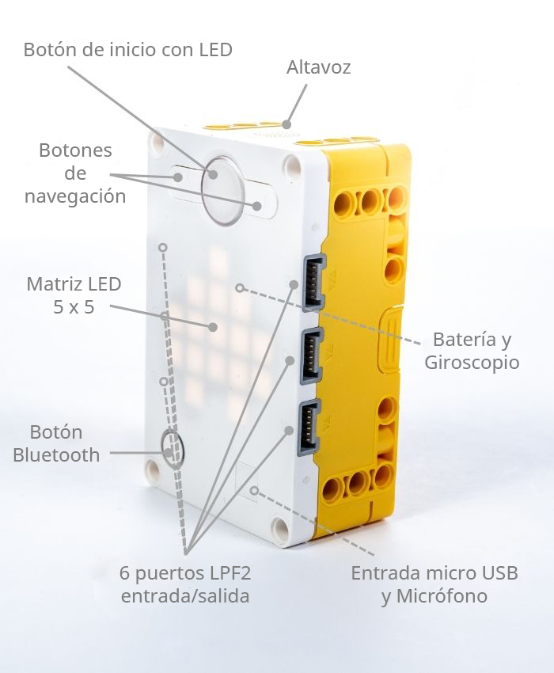
Además de los sensores que explicaremos más adelante, el Hub SPIKE Prime tiene varios sensores integrados.
Estos incluyen un acelerómetro de tres ejes y un giroscopio de tres ejes.
Esta combinación de acelerómetro y giroscopios le permite determinar su orientación, es decir, adelante,
atrás, arriba, abajo, lado derecho, lado izquierdo, así como gestos, es decir, toque, caída libre y sacudida.
El Hub puede determinar su rotación alrededor de cualquiera de sus tres ejes utilizando el sensor de
giroscopio. Las medidas se conocen como cabeceo, balanceo y guiñada.
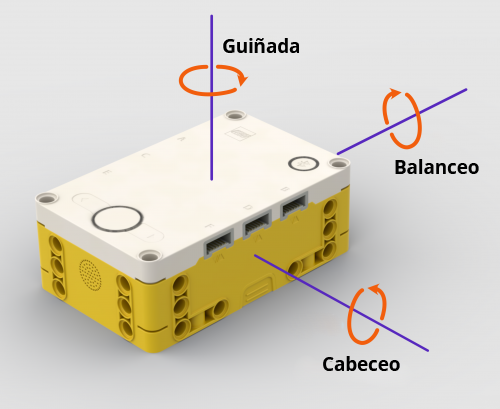
Para cada eje, el sensor de giroscopio mide la velocidad de rotación en grados por segundo y realiza un seguimiento del ángulo total de rotación en grados.
Los motores son necesarios para moverse, y tenemos 2 tipos:
- Motor angular mediano
- Motor angular grande
Cada uno tiene un sensor de rotación integrado con una precisión de hasta 1 grado y la capacidad de medir la
posición absoluta, que se puede usar al programar. La posición cero del motor está marcada en la caja, lo
que facilita la calibración.
Cualquiera de los motores se puede utilizar como dispositivo de entrada, informando su posición a medida que
se gira con la mano.
Los motores pueden medir su posición en grados, ya sea como una posición absoluta en referencia al punto
cero marcado en el motor o en relación con otro punto cero de su elección.
El motor grande tiene más potencia y puede manejar más carga.
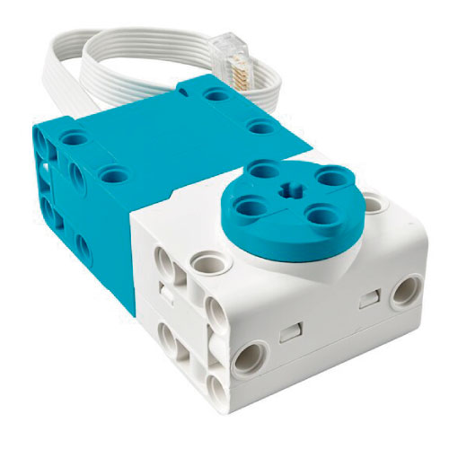
Características
- El motor está diseñado para funcionar como motor y como sensor.
• Con el sensor de rotación avanzado integrado, el motor puede informar tanto de la velocidad
como de la posición. El motor también puede detectar la entrada directa del usuario si la
salida se gira a mano.
• Sensor de velocidad (mide el porcentaje de la velocidad máxima de diseño)
• Posición relativa en grados
• Posición absoluta en grados (-/+ 180 grados)
• Salida tipo cruceta en un lado, disco giratorio con cruceta e interfaz de construcción en el
otro lado
• El motor tiene una geometría de construcción Technic que permite una construcción versátil y
fácil
- Rango de voltaje mínimo 5V, máximo 9V
- Sin carga
• Par: 0 Ncm
• Velocidad: 175 RPM +/- 15%
• Consumo de corriente: 135 mA +/- 15%
- Máxima eficiencia:
• Par: 8 Ncm
• Velocidad: 135 RPM +/- 15%
• Consumo de corriente: 430 mA +/- 15%
- Parar:
• Par: 25 Ncm
• Velocidad: 0 RPM
• Consumo de corriente: 1900 mA +/- 15%
- Sensor de rotación:
• Resolución: 360 conteos por revolución
• La resolución es la cantidad de conteos que hace el sensor por cada revolución completa (360
grados) en el eje de salida
• Precisión: ≤+/- 3 grados
• La precisión se define como las tolerancias en el sensor combinadas con la holgura de la caja
de cambios
• Tasa de actualización: 100 Hz
• Tasa de actualización se define como la frecuencia a la que una nueva lectura del sensor de
posición.
El motor grande se ha optimizado para ser la base motriz de sus robots.
El motor mediano tiene menos potencia pero más precisión.
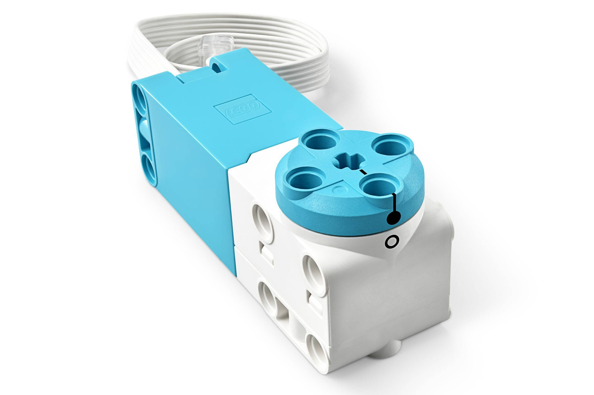
El motor mediano también incluye un sensor de rotación incorporado (con resolución de 1 grado), pero es más
pequeño y más liviano que el motor grande. Esto significa que puede responder más rápidamente.
Características
- El motor está diseñado para funcionar como motor y como sensor.
• Con el sensor de rotación avanzado integrado, el motor puede informar tanto de la velocidad
como de la posición. El motor también puede detectar la entrada directa del usuario si la
salida se gira a mano.
• Sensor de velocidad (mide el porcentaje de la velocidad máxima de diseño)
• Posición relativa en grados
• Posición absoluta en grados (-/+ 180 grados)
• Salida tipo cruceta en un lado, disco giratorio con cruceta e interfaz de construcción en el
otro lado
• El motor tiene una geometría de construcción Technic que permite una construcción versátil y
fácil
- Rango de voltaje mínimo 5V, máximo 9V
- Sin carga
• Par: 0 Ncm
• Velocidad: 185 RPM +/- 15%
• Consumo de corriente: 110mA +/- 15%
- Máxima eficiencia:
• Par: 3,5 Ncm
• Velocidad: 135 RPM +/- 15%
• Consumo de corriente: 280mA +/- 15%
- Parar:
• Par: 18 Ncm
• Velocidad: 0 RPM
• Consumo de corriente: 800mA +/- 15%
- Sensor de rotación:
• Resolución: 360 conteos por revolución
• La resolución es la cantidad de conteos que hace el sensor por cada revolución completa (360
grados) en el eje de salida
• Precisión: ≤+/- 3 grados
• La precisión se define como las tolerancias en el sensor combinadas con la holgura de la caja
de cambios
• Tasa de actualización: 100 Hz
• Tasa de actualización se define como la frecuencia a la que una nueva lectura del sensor de
posición.
Los sensores proporcionan a los robots información sobre su entorno. Con los sensores que vienen con el set SPIKE™ Prime, puedes hacer que un robot responda al tacto, reaccione cuando alguien o algo se acerque demasiado, siga una línea, determine su orientación y mucho más.
Este sensor puede utilizarse en tres modos diferentes: modo color, modo intensidad de la luz reflejada y
modo intensidad de la luz ambiental.
También se puede utilizar como fuente de luz.
Características:
- Frecuencia de muestreo del sensor: 100 Hz
- Distancia de lectura óptima: 16 mm (según el tamaño, el color y la superficie del objeto)
- Tres LED controlados individualmente (solo Python)
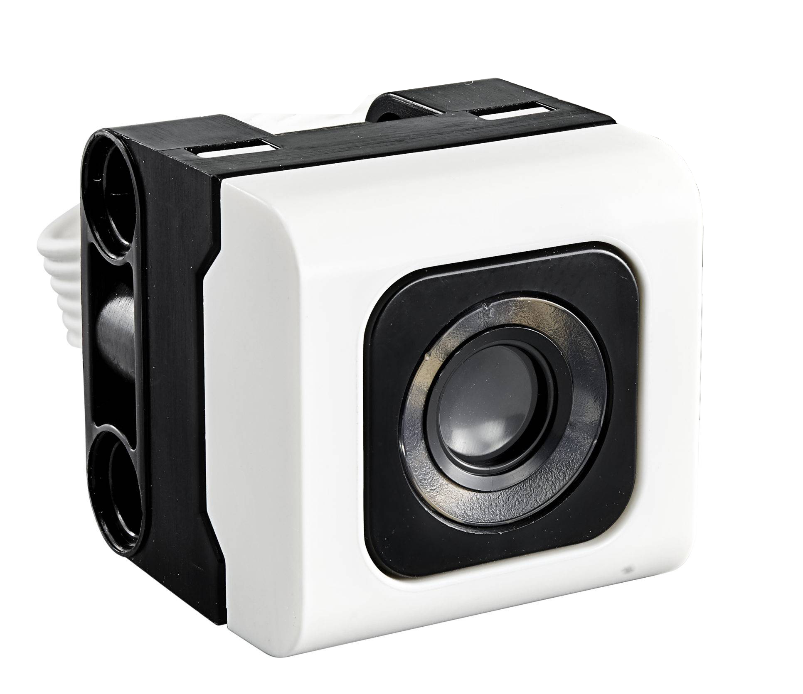
En modo color, el sensor reconoce siete colores diferentes y la ausencia de objeto: negro, azul, verde, amarillo, rojo, blanco y marrón.
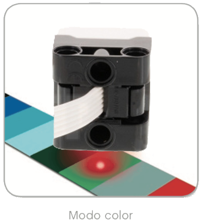
Cada color LEGO también está representado por un valor. El sensor también puede generar los valores crudos de rojo, verde y azul (RGB) por separado.
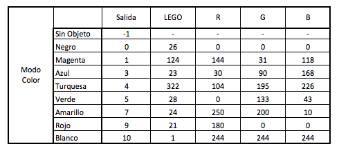
En modo intensidad de la luz reflejada, el sensor de color emite una luz y mide la cantidad reflejada hacia
sí mismo desde la superficie que está probando.
La intensidad de la luz se mide como un porcentaje de 0 a 100, siendo 0 muy oscuro y 100 muy brillante.
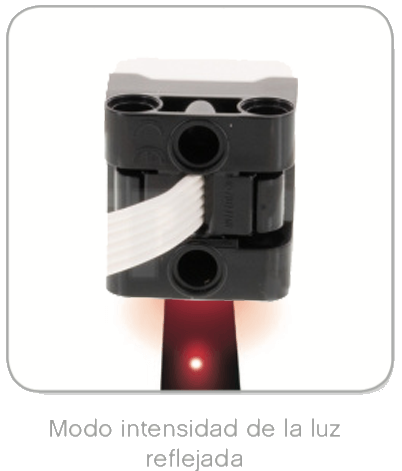
En modo intensidad de la luz ambiental (solo Python), el sensor de color mide la cantidad de luz en su
entorno, sin producir su propia fuente de luz.
La intensidad de la luz ambiental se mide como un porcentaje de 0 a 100, siendo 0 muy oscuro y 100 muy
brillante.
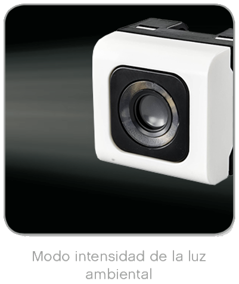
La tasa de muestreo del sensor de color es de 1 kHz. Para optimizar la exactitud, en modo color o en modo
intensidad de la luz reflejada, el sensor debe sostenerse en un ángulo recto, cerca de la superficie que
examina, pero sin tocarla.
La distancia de lectura óptima son 16 mm, pero dependerá también del tamaño, color y superficie del objeto.
En el modo emisión de luz, el sensor emite una luz blanca a modo de antorcha. La emisión se realiza mediante 3 LEDs controlados individualmente.
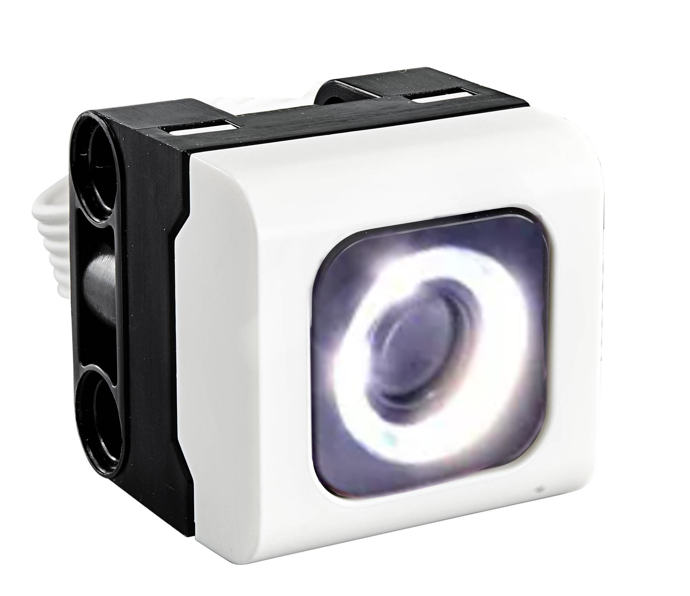
Emite en color blanco con una temperatura de color de 4000K. La potencia de salida es controlable de 0 a 100%
en incrementos de 1%.
No se puede usar mientras el sensor está en modo de detección de color/luz.
El sensor de fuerza le da a tu robot un sentido del tacto. Puede detectar si se está presionando y la cantidad de fuerza que se está aplicando. Mide la cantidad de presión que se le aplica en newtons o como un porcentaje (el 100 % corresponde a 10 newtons). Además, detecta cuándo se presiona, suelta o golpea el botón.
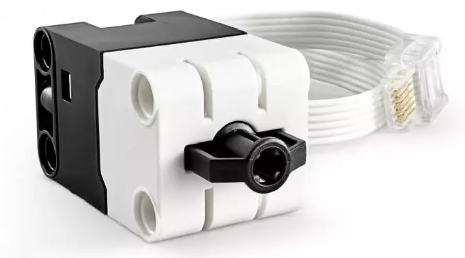
Gracias a esto, el sensor de fuerza ofrece a los usuarios una serie de formas completamente nuevas de usarlo,
por ejemplo, como una báscula o un parachoques inteligente para un vehículo.
Características
- El sensor puede detectar un simple toque y medir la fuerza.
• Detección táctil
* Zona de activación: 0-2 mm
* El punto de umbral se define en el firmware 1 mm +/- 0,5 mm
* Fuerza de activación: 0,5-1,0 newton +/- 10 %
* La salida del sensor es binaria (1=activado o 0=no activado)
• Detección de toque
* Zona de activación: 0-2 mm
* El punto de umbral se define en el firmware 1 mm +/- 0,5 mm
* Fuerza de activación: 0,5-1,0 newton +/- 10 %
* Salida de datos del sensor: 0-3 (solo toque, toque rápido o presione y mantenga)
• Detección de fuerza
* Zona de activación: 2-8 mm
* Fuerza de activación: 2,5-10 newtons
* Resolución de salida del sensor: pasos de 0,1 newton
* La salida del sensor está limitada a un valor de salida máximo fijo de 10 newtons
* Precisión de salida del sensor: +/- 0,65 newton
• Detección de filtro de fuerza (detección de "pico" de alta velocidad)
* Como el modo de detección de fuerza
* Frecuencia de muestreo del sensor interno: 1kHz
* Mantiene el valor máximo hasta que el firmware del concentrador lo reinicia o se apaga
El sensor de distancia mide la distancia a un objeto o superficie usando tecnología ultrasónica. El sensor funciona enviando ondas de sonido de alta frecuencia que rebotan en cualquier objeto dentro del alcance y midiendo cuánto tarda el sonido en volver al sensor.
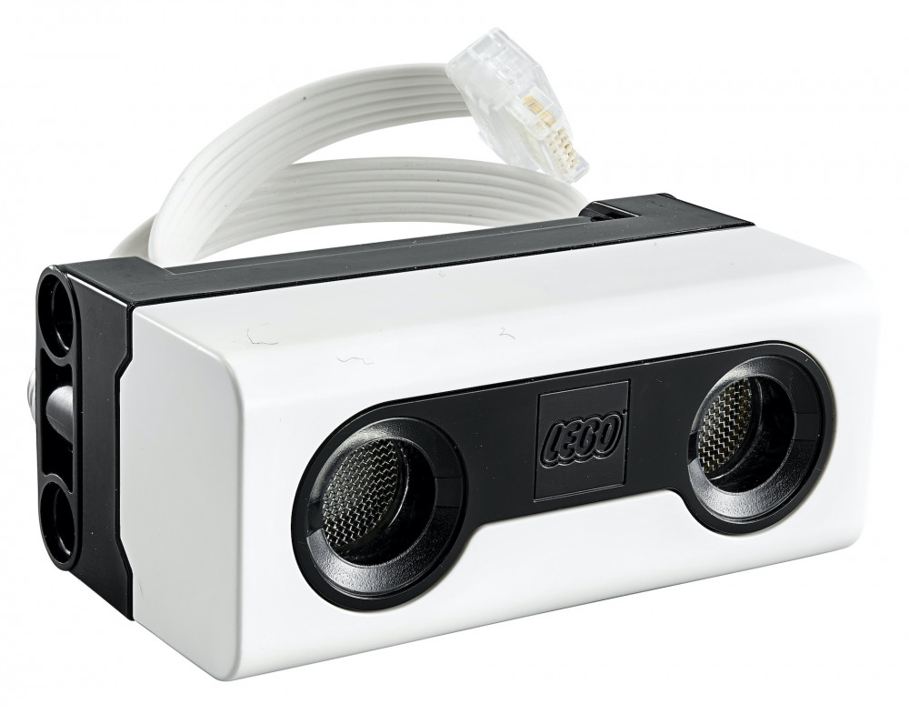
Su rango de operación es de 4 a 200 cm (aunque la distancia sea menor). Es bastante preciso, ya que el
margen de error es de aproximadamente 1cm.
Alrededor del transmisor y el receptor hay una característica interesante. Se pueden programar 4 LED para
simular los ojos y las expresiones faciales del robot. Estos 4 LED se pueden controlar individualmente.
Además, la parte posterior del sensor se puede quitar y el cable desconectar, convirtiéndose efectivamente
en un cable de conexión LEGO Power Functions 2.0 (LPF2).
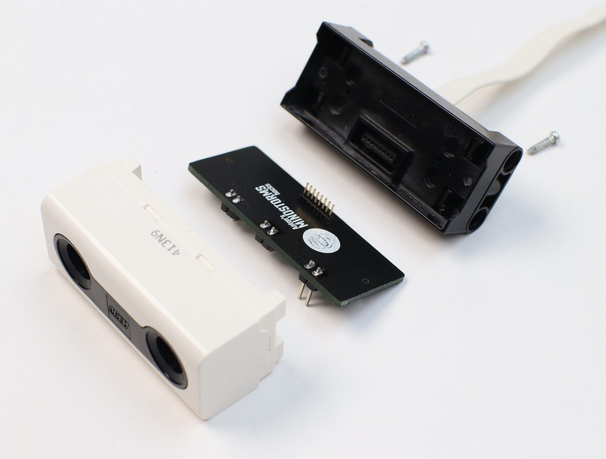
Características
- Detección de distancia de 50 a 2000 mm
- Detección de distancia rápida de 50 a 300 mm
- Salida de luz blanca alrededor de los "ojos" del sensor dividida en cuatro segmentos: dos superiores
y dos segmentos inferiores
- Detección de distancia:
• Alcance total: 50-2000 mm +/- 20 mm
• Ángulo de entrada: +/- 35 grados (varía según la distancia)
• Resolución de salida del sensor: 1 mm
- Detección de distancia rápida:
• Alcance total: 50-300 mm +/- 15 mm
• Ángulo de entrada: +/- 35 grados (varía según la distancia)
• Resolución de salida del sensor: 1 mm
- Salida LED:
• Color: blanco 4000K
• Controlado individualmente (LED de 4 segmentos en total)
• Potencia de salida: controlable de 0 a 100 % en incrementos de 1 %
Nota: Debido a que el sensor ultrasónico depende de la reflexión de ondas de sonido, es posible que no resulte eficaz en la detección de superficies texturadas o de objetos redondeados. También es posible que un objeto sea demasiado pequeño para que el Sensor ultrasónico lo detecte.